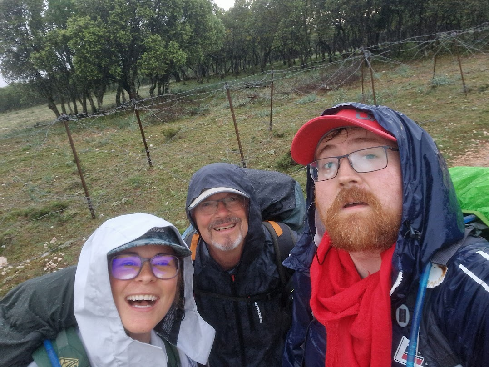
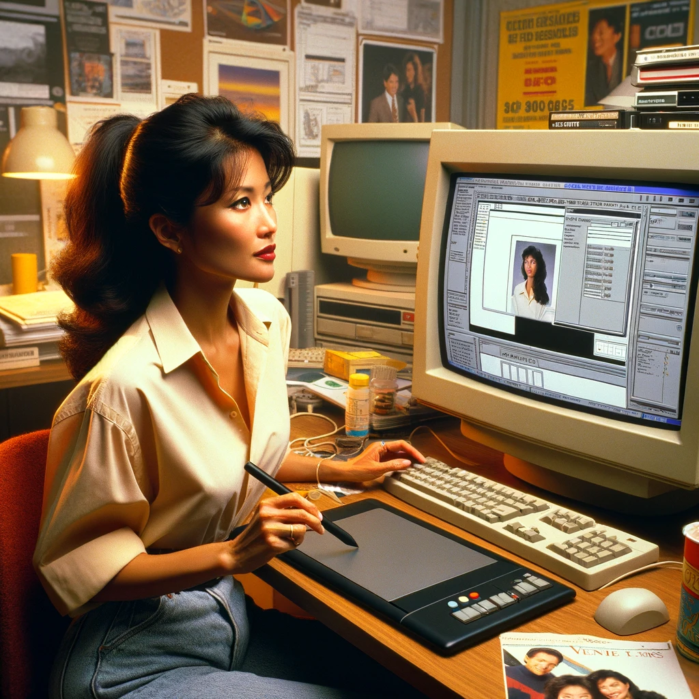
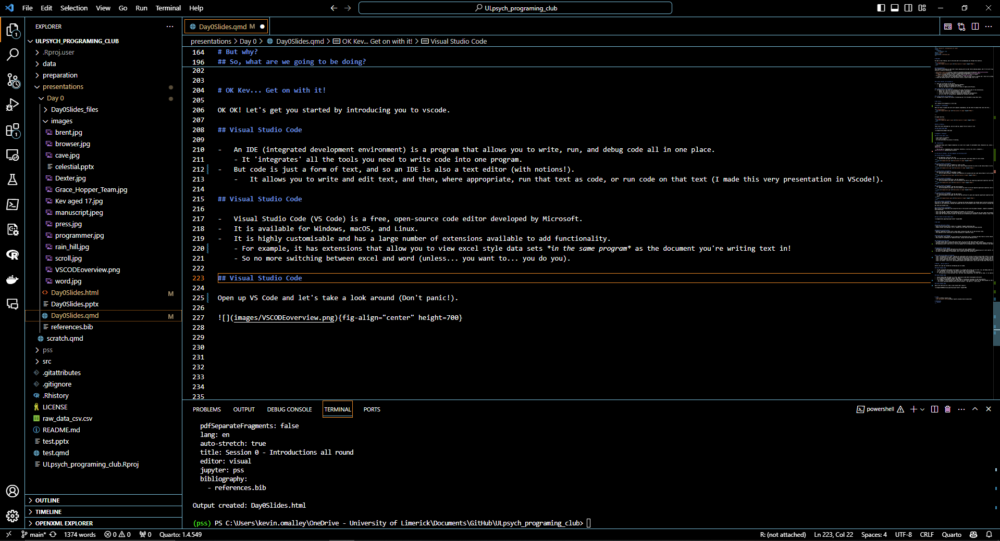
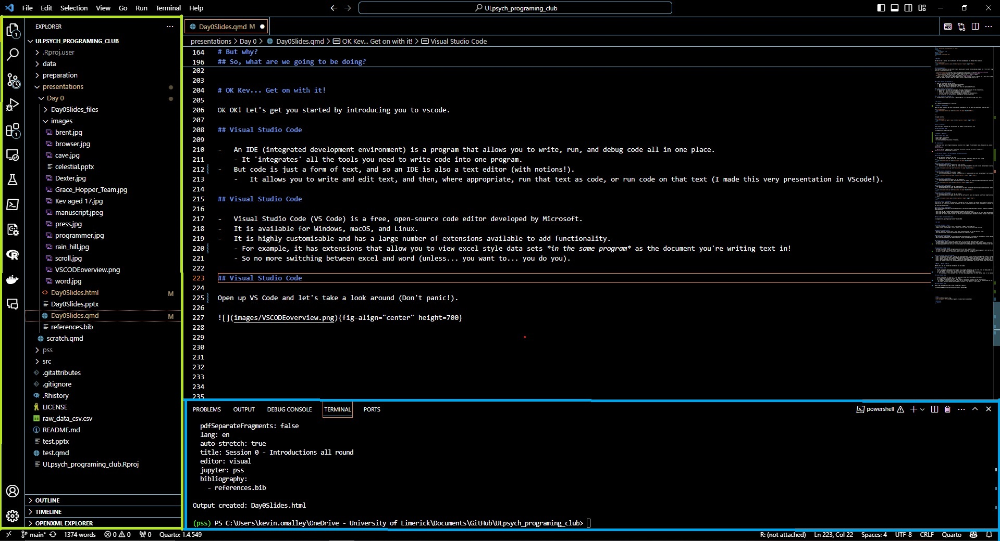
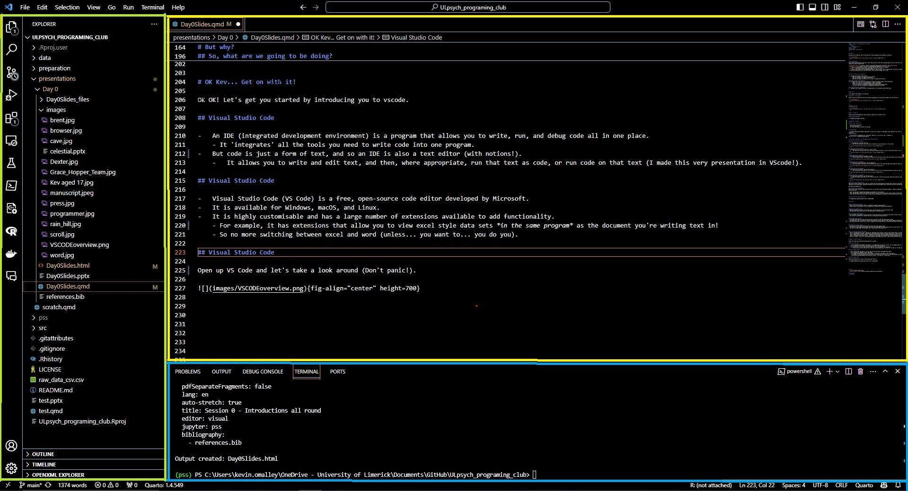
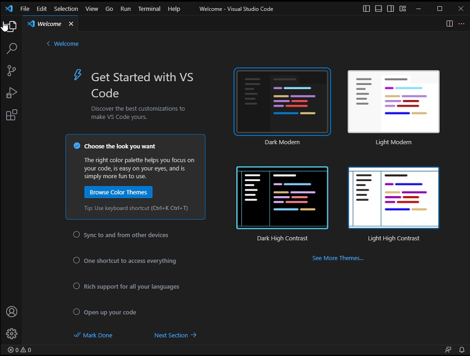
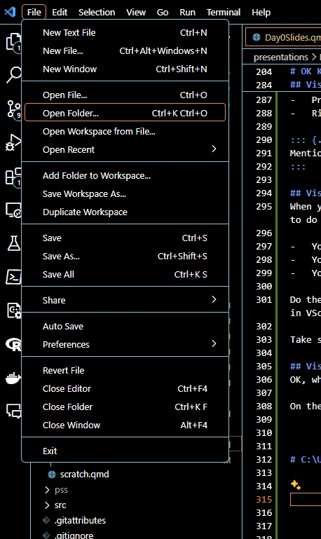
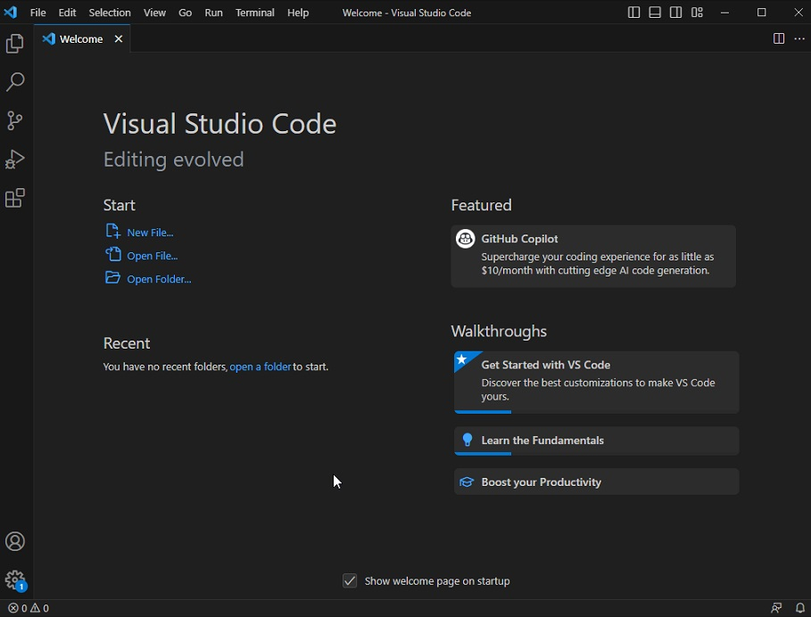
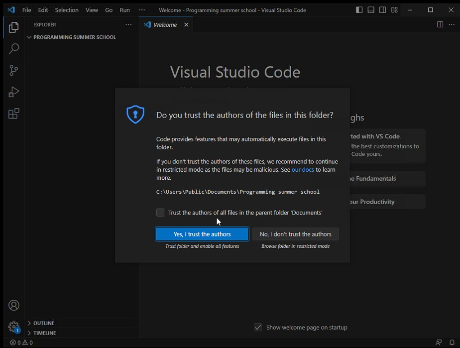

Session 0 - Introductions all round
Welcome!
My name is Kev O Malley, and I’m the nerd who’ll be accompanying you through this material.

Acknowledgements
This content is building on some other really amazing work by some really amazing people, and I’ll be sure to give them credit as we go along, but just to note that this material is heavily inspired by:
- The python crash course (Matthes 2022)
- Pandas for everyone (Chen 2017)
- There’s a second edition of this, I haven’t read it, but I’m sure it’s great!
- Harvard’s CS50 (Malan 2020)
- This is free online and it’s genuinely excellent, they also have intros to python and r which will go deeper than this course.
- A deep and abiding hatred of SPSS and MS Word (excel is great though, don’t @ me)
In this session, we’re going to:
- Give you an overview of the course:
- What we’re going to be doing (learning together).
- Why we’re doing it (to empower each other).
- What you can expect to get out of it (a sense of agency and efficacy).
In this session, we’re going to:
- Introduce you to the tools we’re going to be using (and mention some of the alternatives).
- Quarto (as a tool for writing documents, reports, and papers).
- Python (as a tool for doing data analysis and visualisation).
- R (as an alternative to Python for doing data analysis and visualisation).
- Git (as a tool for collaboration, managing your documents and code)
In this session, we’re going to:
- Accompany you through the process of producing your first documents using these tools.
But first…
Let’s address the elephant(s) in the room.
Elephant 1: Stereotypes
When you think of people who work with computer programming, you may think of people that look like this…
Or maybe like this

But in reality…
These tools were developed by, and are used by, people from all walks of life
AND ALWAYS HAVE BEEN
Elephant 2: Pressure
You’re very smart, but…
- You’re here to learn.
- Not to be an expert.
- So relax and enjoy the process of learning.
Inspirations
‘The Great Being saith: Regard [humanity] as a mine rich in gems of inestimable value. Education can, alone, cause it to reveal its treasures, and enable mankind to benefit therefrom.’ (Baha’u’llah 19th century)
The diversity in the human family should be the cause of love and harmony, as it is in music where many different notes blend together in the making of a perfect chord. (Abdul-Baha 1938)
“We are what we repeatedly do. Excellence, therefore, is not an act, but a habit.” (Durant 1933, paraphrasing Aristotle)
A new way of working - Let the computer do the boring stuff
A brief history of documents
- In the beginning, there was the cave.
- And the cave was good, but it was also cold and dark, and really heavy to carry around.
- And the cave was good, but it was also cold and dark, and really heavy to carry around.
A brief history of documents
- Then there was the scroll, of papyrus or linen or hide.
- And the scroll was good, but it was also really fragile and hard to write on (and really heavy to carry around).
- And the scroll was good, but it was also really fragile and hard to write on (and really heavy to carry around).
A brief history of documents
- Then there was the codex, of parchment or paper.
- And the codex was good, illumined with beautiful art by monks and nuns (and really heavy to carry around).

- And the codex was good, illumined with beautiful art by monks and nuns (and really heavy to carry around).
A brief history of documents
- Then there was the printing press, and the typesetter.
- And the documents were good, but the machinery was hard to use requiring significant expertise (and really heavy to carry around).
- And the documents were good, but the machinery was hard to use requiring significant expertise (and really heavy to carry around).
A brief history of documents
- Then there was the computer, and the word processor.
- And the documents were good, but the software was hard to use and required significant expertise (and really heavy to carry around).
- And the documents were good, but the software was hard to use and required significant expertise (and really heavy to carry around).
A brief history of documents
- Then there was the internet, and the web browser.
- And the documents were good, but the text was difficult to parse and required significant expertise (but the documents were really easy to carry around… maybe too easy).

- And the documents were good, but the text was difficult to parse and required significant expertise (but the documents were really easy to carry around… maybe too easy).
A brief history of documents
With each of these advances, the process of creating and sharing documents has become easier and more accessible, but this means that each person has to have a wider range of expertise to work well with documents effectively. Not just writing, but typesetting, graphic design etc.
A brief history of documents
While writers and researchers were using the tools of the printer and the graphic designer, computer programmers were developing tools to help them write and share their work more effectively.
- Tools like the IDE (integrated development environment) for writing text.
- Tools like Markdown, quarto, and restructured text to allow you to just write and not worry about the formatting.
- Tools like the version control system for sharing and collaborating on documents (without having to email them back and forth).
So you can focus on the writing and the thinking and let the computer do the tedious and error prone stuff.

But why?
Running Code with a Mouse
- Every click and action with a mouse on a computer triggers underlying code.
- Simple actions like opening a file or copying text are coded instructions being executed.
Repetition and Efficiency
- Manually repeating an action with a mouse means running the same set of code multiple times.
- This approach can be inefficient and time-consuming for repetitive tasks.
Writing Code for Automation
- By writing code instead, you can specify the instructions once, including how many times an action should be repeated.
- This allows for automation of repetitive tasks, saving time and reducing errors.
Leveraging Existing Code
- You don’t always have to write code from scratch; you can use code that others have written.
- Libraries and scripts created by others can be applied to your specific needs, making complex operations simpler and more efficient.
- And meaning you don’t have to do it (let the computer set the heading levels, format the references, and tables!)
Empowerment through Coding
- Learning to write or modify code gives you control over your computer tasks.
- It transforms repetitive manual actions into efficient automated processes, empowering you to work smarter, not harder.
- You have a limited number of heartbeats, don’t waste them on the boring stuff.
OK Kev… Get on with it!
So, what are we going to be doing?
- Day 0: Introductions all round - getting you comfortable with writing in quarto using vscode (there’s no code today, just writing).
- Day 1: Introduction to Python - getting you comfortable with the basics of python (where you’ll learn why yesterday was called ‘Day 0’).
- Day 2: Python functions and libraries - getting you comfortable with using python to do data analysis and visualisation.
- Day 3: Environment and version control - getting you comfortable with using git and github to manage your projects (code and documents).
- Day 4: et cetera - intro to R, some example projects with Python and R, and a look at some other tools and resources.
Let’s get you started by introducing you to vscode.
Visual Studio Code
- An IDE (integrated development environment) is a program that allows you to write, run, and debug code all in one place.
- It ‘integrates’ all the tools you need to write code into one program.
- But code is just a form of text, and so an IDE is also a text editor (with notions!).
- It allows you to write and edit text, and then, where appropriate, run that text as code, or run code on that text (I made this very presentation in VScode!).
Visual Studio Code
- Visual Studio Code (VS Code) is a free, open-source code editor developed by Microsoft.
- It is available for Windows, macOS, and Linux.
- It is highly customisable and has a large number of extensions available to add functionality.
- For example, it has extensions that allow you to view excel style data sets in the same program as the document you’re writing text in!
- So no more switching between excel and word (unless… you want to… you do you).
Visual Studio Code
Open up VS Code and let’s take a look around (Don’t panic!).

Visual Studio Code

- The left-hand side of the window is the activity bar.
- It contains icons for the different views and panels in VS Code.
- You can click on these icons to switch between views.
- The main one you’ll use is the ‘explorer’ icon, top of the activity bar, which will show you the files and folders in your project.
Visual Studio Code

- The bottom panel is the terminal.
- This is where you can run commands and see the output of those commands.
- You can also run your code here.
- You can open the terminal by clicking on the ‘terminal’ icon in the bar along the top of the VScode window.
Visual Studio Code

- The largest panel is the editor.
- This is where you write your code and text.
- But it’s also like a browser, you can have multiple tabs open at once, and different types of files
- You can split the editor into multiple panes to allow for previews, to view your data while you work, or even compare different parts of the same document!
Visual Studio Code
OK so that’s the basic layout of VScode, but there’s a lot more to it than that, and we’ll be exploring it as we go along. For the next little while we’re just giong to focus on the editor, with a little bit about the explorer (cause that’s where you’ll be spending most of your time). Open up VS Code and lets jump in.
Visual Studio Code
To open VScode you can either: - Click on the icon on your desktop or in your start menu. - Press the windows key and type ‘vscode’ or ‘code’ and press enter. - Right-click on a folder (or file) and select ‘open with code’ from the menu (if it’s installed on your device).
Visual Studio Code
When you open VScode for the first time, you’ll see a welcome screen, this gives you some options for how you want VScode to look and feel, and some options for what you want to do with it.

- You can choose a theme (light or dark).
- You can choose a colour scheme.
- You can choose a font.
Visual Studio Code
Do these choices matter? Not really so don’t stress. They are aesthetic choices, and you can change them at any time, but thier there because you’ll be spending a lot of time in VScode and you should be there.
Take some time and look around the screen, I’ll be walking around to make sure that you see everything.
Visual Studio Code
OK, when you’ve selected a theme, click on the ‘file’ button in the top left of the window, and then click on ‘open folder’.
On the computer you’re using there is a folder called ‘Programming summer school’ at the address:
“C:\Users\Public\Documents\Programming summer school”
 
Visual Studio Code
Select that folder.

Visual Studio Code
If it’s the first time you’ve selected or opened this folder (or a subfolder of it), you’ll see a message asking if you ‘Trust the authors of the folder’.

Click ‘Yes, I trust the authors’ (because you do, right?).
Visual Studio Code
You should now see the ‘explorer’ view in the activity bar on the left of the window, and a list of files and folders in the ‘Programming summer school’ folder. Right now there’s only one file, called example.qmd.
Lets open that file and introduce you to your new best friend, the quarto markdown document!